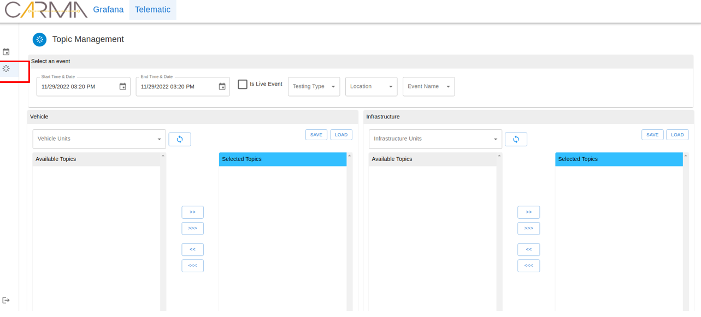

System redesign focused on migrating complex vehicle telemetry from a legacy web platform to a mobile-first decision tool.
This redesign reframed a dense desktop telematics experience into a mobile HSI that supports field research decisions under time pressure. The work centered on translating established patterns from comparable systems into a simpler interaction model optimized for in-vehicle and roadside contexts.
Internal research teams at Leidos who conduct vehicle studies and need to monitor telematics data, check event details, and make operational decisions while on the road. These users require mobile access to data that was previously only available on desktop systems.

Research and field teams needed to interpret complex vehicle telemetry in real time, but the legacy workflow depended on dense, spreadsheet-like web layouts that were difficult to use in active field conditions. This increased navigation friction and delayed time-sensitive interpretation tasks.
Prioritized glanceable telemetry data to support situational awareness for researchers in the field, with clear hierarchy for faster interpretation and intervention decisions.
Safety-critical telemetry markers are visually separated from informational data so field users can assess status at a glance without reading through dense tables.
Desktop workflows that required 4–5 taps were condensed into a single contextual action, reducing the number of decisions a researcher needs to make while on-the-road.
Kept all labels and terminology aligned with the existing web platform so experienced users don't have to re-learn the system — just the interaction model.
I collaborated with product stakeholders and engineering to define scope and feasibility, then used competitive references and heuristic findings to drive redesign priorities where direct primary research was limited in this phase.
Produced a mobile-first decision support concept that improved scanability of telemetry workflows and established a safer visual hierarchy for field usage. The redesign provides a practical foundation for future implementation focused on operator performance in live research contexts.